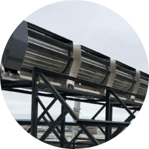

Las unidades solares híbridas combinan todos los beneficios de los sistemas de turbinas RB1 y RB2 básicos con la salida adicional de los paneles solares fotovoltaicos.
Las unidades híbridas utilizan paneles solares de bajo perfil que se integran en la estructura del techo existente. Son adecuados para la mayoría de los lugares de instalación.
Para maximizar la generación de energía durante todo el año, las turbinas RidgeBlade® proporcionan una salida de energía durante la noche y en los meses de invierno cuando los paneles solares están menos activos.